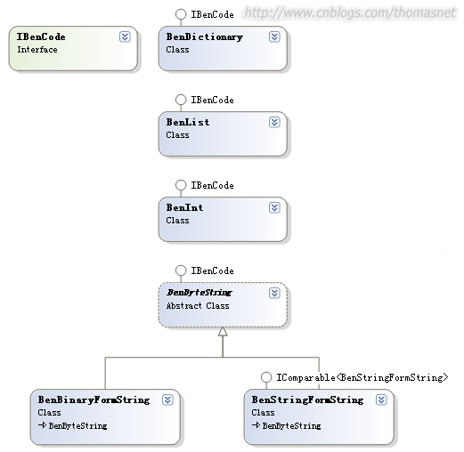

原創文章，未賦予轉載複製的權利。如需轉載，請聯繫博主
簡要說明：
bt種子torrent文件就是對文件二進制值的
sha1
hash，然後按照bencode的格式進行保存。
bencode包含以下的幾個類：

IBenCode的定義如下：
interface IBenCode
{
byte[] ToByteArray();
}
規定了所有bencode類型都要提供的功能，用來把內存中的bencode dom轉換成字節序列寫入文件。
另外，bencode中有些string是可顯示的，有compare的需求，有些是用來存儲二進制的，比如hash值。所以我做了兩個類來實現目標：
BenBinaryFormString, BenStringFormString。其中兩個類都需要實現IBenCode接口的ToByteArray方法，為避免代碼重複，我把共同的內容提取到了抽象類中：
abstract class BenByteString : IBenCode
{
abstract protected
byte[] GetByteArray();
public byte[]
ToByteArray()
{
List<byte>
byteList = new List<byte>();
byte[] byteContent = GetByteArray();
string sizeHeader =
string.Format("{0}:", byteContent.Length);
byteList.AddRange(Encoding.UTF8.GetBytes(sizeHeader));
byteList.AddRange(byteContent);
return byteList.ToArray();
}
}
torrent文件生成過程是：
1. 構建bencode dom
2. 按照一個固定大小比如1M讀取二進制塊
3. 計算出sha1 hash
4. 把bencode dom寫入文件
下面的CreateTorrentFile實現了這個流程：（包括了兩大步驟，DOM的生成和文件寫入）
private static void
CreateTorrentFile(string[] fileName,
string announceUrl,
string torrentFileName,
string torrentDirectoryName)
{
string[] sortedFileName = Utility.OrdinalSortStringArray(fileName);
// 1. create the torrent tree
BenCode.BenDictionary root = new
BenCode.BenDictionary();
// 1.1 announce URL
root.Add("announce",new
BenCode.BenStringFormString(announceUrl));
// 1.2 info block
BenCode.BenDictionary info = new
BenCode.BenDictionary();
// 1.2.1 name
bool IsDirectory = !string.IsNullOrEmpty(torrentDirectoryName);
string
strNameValue;
if (IsDirectory)
{
strNameValue = torrentDirectoryName;
}
else
{
strNameValue = Path.GetFileName(sortedFileName[0]);
}
BenCode.BenStringFormString
nameValue =
new BenCode.BenStringFormString(strNameValue);
info.Add("name", nameValue);
// 1.2.2 piece length
BenCode.BenInt pieceLength = new
BenCode.BenInt(1024 * 1024);
info.Add("piece
length", pieceLength);
// 1.2.3 pieces
BenCode.BenBinaryFormString pieces =
new BenCode.BenBinaryFormString(Get1MBasedHashFromFiles(sortedFileName));
info.Add("pieces", pieces);
// 1.2.4 single file
if (IsDirectory)
{
BenCode.BenList files = GetFilesBlock(sortedFileName);
info.Add("files",
files);
}
else
{
BenCode.BenInt length =
new
BenCode.BenInt(
Utility.GetFileLength(sortedFileName[0])
);
info.Add("length",
length);
}
root.Add("info", info);
// 2. write to the file
using (FileStream
torrentFileStream = new FileStream(torrentFileName,
FileMode.Create,
FileAccess.Write))
{
byte[] torrentFileByte
= root.ToByteArray();
torrentFileStream.Write(torrentFileByte,
0, torrentFileByte.Length);
}
}
源程序下載地址：
下載，歡迎提供bug和優化建議
posted on 2007-11-07 11:47
踏雪無痕 閱讀(524)
評論(2) 編輯 收藏